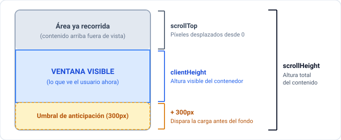

Sección 08: GifsApp Intermedio/Avanzado — Masonry, Scroll Infinito, ViewChild y Depuración¶
En esta sección elevamos la calidad de nuestra aplicación GifsApp a un nivel profesional. Implementaremos una cuadrícula en cascada estilo Masonry, utilizaremos las Signal Queries (viewChild()) consolidadas en Angular 22, calcularemos matemáticamente el umbral de Scroll Infinito con paginación por offset, construiremos un servicio singleton de Preservación del Estado del Scroll, y dominaremos las técnicas reales de depuración (Angular DevTools, Breakpoints en VS Code con F5 y debugger;).
📋 Ficha Técnica y Objetivos Didácticos¶
- Proyecto:
gifs-app(Continuación — Técnicas avanzadas de UI, Reactividad Fina y Depuración). - Stack Angular 22:
@Service(), Signal Queries (viewChild<ElementRef<HTMLDivElement>>()),computed()para matrices de datos, ciclo de vidaAfterViewInit(y alternativa modernaafterNextRender()). - Patrones UX: Infinite Scrolling con bloqueo de peticiones concurrentes (Concurrency Lock), Preservación de posición del viewport (Scroll Restoration Pattern).
- Código Fuente de Referencia: GitHub - DevTalles GifsApp (fin-seccion-08)
flowchart TD
subgraph Deteccion ["Fase 1 · Detección de Scroll y Eventos (UI)"]
DOM["<b>viewChild('groupDiv')</b><br/>Referencia reactiva al contenedor con overflow-y-scroll"] --> Calc["<b>Detección de Umbral Infinito</b><br/><code>scrollTop + clientHeight + 300 >= scrollHeight</code>"]
end
subgraph Orquestacion ["Fase 2 · Control de Concurrencia y Paginación (GifService)"]
Lock["<b>Bloqueo Concurrente (trendingGifsLoading)</b><br/>Evita múltiples llamadas HTTP simultáneas mientras carga"] --> Fetch["<b>Paginación y Acumulación</b><br/>Petición con offset incremental y .update() inmutable"]
end
subgraph Presentacion ["Fase 3 · Layout Masonry y Persistencia de Scroll"]
Masonry["<b>Señal Computada (trendingGifGroup)</b><br/>Matriz reactiva de grupos de 3 para rejilla Masonry"] --> ScrollState["<b>ScrollStateService (Singleton)</b><br/>Preserva y restaura scrollTop en navegación"]
end
Deteccion ==> Orquestacion ==> PresentacionPuesta a punto antes de empezar (si retomas el proyecto o descargas el código)
- Ejecuta
npm installyng serve -opara levantar la aplicación. - Si no ves ningún GIF o aparecen errores de red, revisa que hayas configurado tu API Key (no el SDK) de Giphy Developers exactamente igual en ambos archivos:
src/environments/environment.tsysrc/environments/environment.development.ts. - Si quieres limpiar las búsquedas cacheadas del menú lateral, abre DevTools (F12) → pestaña Application → Local Storage → elimina la clave
gifs.
Diseño Masonry en Cascada con Tailwind CSS¶
📖 Para saber más: Manual de Referencia
Para dominar el cálculo reactivo con computed() y la derivación pura de datos, consulta el Manual de Referencia: 05. Signals y Reactividad.
El diseño Masonry (popularizado por Pinterest) organiza imágenes de distintas alturas en columnas equilibradas sin dejar grandes huecos verticales. En lugar de depender de librerías externas, podemos resolverlo con Tailwind CSS y una señal computada.
Vamos a implementarlo en tres pasos progresivos:
Paso 1: Maquetar la estructura base de Flowbite¶
En la documentación de Flowbite — Tailwind CSS Gallery (Masonry), el patrón consiste en un grid padre de columnas (grid-cols-2 md:grid-cols-4 gap-4) que contiene varios grids internos (grid gap-4), cada uno con grupos de 3 imágenes.
Antes de conectar nuestros GIFs reales, comenta temporalmente <gif-list ... /> en src/app/gifs/pages/trending-page/trending-page.component.html y pega el bloque estático de Flowbite (añadiendo pt-5 arriba para que respire) para comprobar que el diseño responsive de 2 columnas en móvil y 4 en escritorio funciona.
Paso 2: Agrupar la lista plana en subgrupos de 3 con computed()¶
Nuestros datos en GifService llegan como un array plano ([gif1, gif2, gif3, gif4, gif5, ...]), pero la plantilla Masonry necesita un array de arrays de 3 elementos ([[gif1, gif2, gif3], [gif4, gif5, gif6], ...], pudiendo tener el último grupo menos de 3 elementos, por ejemplo 2 si hay 20 GIFs).
En src/app/gifs/services/gifs.service.ts creamos la señal computada trendingGifGroup:
@Service()
export class GifService {
private http = inject(HttpClient);
// Lista plana de gifs acumulados
trendingGifs = signal<Gif[]>([]);
trendingGifsLoading = signal(false);
private trendingPage = signal(0);
// SEÑAL COMPUTADA: Transforma Gif[] en Gif[][] (grupos de 3)
trendingGifGroup = computed<Gif[][]>(() => {
const groups: Gif[][] = [];
for (let i = 0; i < this.trendingGifs().length; i += 3) {
groups.push(this.trendingGifs().slice(i, i + 3));
}
return groups;
});
// ...
}
¿Cómo funciona exactamente la transformación de Gif[] a Gif[][]?¶
- Qué significa
Gif[][]: mientrasGif[]es una lista plana de GIFs ([gif0, gif1, gif2, ...]),Gif[][]es un array de arrays (una "caja grande"groupsdonde cada elemento interior es una "cajita" con un grupo de hasta 3 GIFs). Cada cajita corresponderá a una columna<div class="grid gap-4">en el HTML del Masonry. - Cómo funciona
.slice(inicio, fin): extrae una porción del array original sin modificarlo. Incluye la posicióninicioy se detiene justo antes defin(es decir, tomainicio,inicio + 1einicio + 2). Sifinsupera la longitud del array, simplemente devuelve los elementos que queden sin lanzar error. - Por qué
i += 3y noi++: si avanzáramos de 1 en 1 (i++), los grupos se solaparían ([0,1,2],[1,2,3],[2,3,4]...) repitiendo GIFs. Coni += 3saltamos directamente al principio del siguiente bloque de 3.
Ejemplo visual paso a paso suponiendo que this.trendingGifs() tiene 7 GIFs ([gif0, gif1, gif2, gif3, gif4, gif5, gif6]):
Vuelta del for |
Valor de i |
Llamada .slice(i, i + 3) |
Sub-array extraído | Estado de groups tras groups.push(...) |
|---|---|---|---|---|
| Antes del bucle | — | — | — | [] |
| 1.ª vuelta | i = 0 |
.slice(0, 3) |
[gif0, gif1, gif2] |
[ [gif0, gif1, gif2] ] |
| 2.ª vuelta | i = 3 (0 + 3) |
.slice(3, 6) |
[gif3, gif4, gif5] |
[ [gif0, gif1, gif2], [gif3, gif4, gif5] ] |
| 3.ª vuelta | i = 6 (3 + 3) |
.slice(6, 9) |
[gif6] (solo queda 1) |
[ [gif0, gif1, gif2], [gif3, gif4, gif5], [gif6] ] |
| Fin del bucle | i = 9 (9 < 7 es false) |
— | Sale del for |
Devuelve groups (3 grupos listos para @for) |
- Reactividad automática: al estar envuelto en
computed(), cada vez quetrendingGifsreciba 20 nuevos GIFs al hacer scroll,trendingGifGroup()se recalculará automáticamente y añadirá las nuevas columnas de 3 en 3.
Paso 3: Conectar los @for anidados en TrendingPageComponent¶
Ahora reemplazamos las imágenes estáticas de Flowbite por dos bucles @for anidados en src/app/gifs/pages/trending-page/trending-page.component.html:
<div class="grid grid-cols-2 md:grid-cols-4 gap-4 pt-5">
@for (group of gifService.trendingGifGroup(); track $index) {
<div class="grid gap-4">
@for (gif of group; track gif.id) {
<div>
<img
class="h-full w-full rounded-lg object-cover"
[src]="gif.url"
[alt]="gif.title"
/>
</div>
}
</div>
}
</div>
(Nota: si ya no usas GifListComponent en TrendingPageComponent, recuerda eliminar o comentar su importación en trending-page.component.ts para evitar warnings de compilación).
Señales de Consulta DOM con viewChild y Contenedor con Scroll¶
📖 Para saber más: Manual de Referencia
Para dominar las consultas al DOM y a componentes hijos con Signal Queries (viewChild, viewChildren, contentChild), consulta el Manual de Referencia: 14. Queries del DOM (viewChild).
Paso 1: Escuchar el evento (scroll) y convertir el <div> en contenedor con scroll propio¶
Para detectar cuándo el usuario se desplaza por la galería, empezamos añadiendo el evento (scroll)="onScroll($event)" en el <div> principal de la plantilla y creando el método onScroll(event: Event) en TrendingPageComponent para imprimir el evento por consola:
Si guardas y mueves ahora la rueda del ratón sobre los GIFs, verás que no aparece nada en la consola. ¿El motivo? El que está haciendo scroll es todo el documento (window), no nuestro <div> interno, porque el <div> crece libremente hacia abajo según su contenido.
Para comprobarlo visualmente y convertir nuestro <div> en el contenedor con scroll propio:
- Si pones temporalmente
h-[400px] bg-red-500, verás que los GIFs se desbordan por debajo de la caja roja. - Si añades
overflow-hidden, los GIFs que sobran se recortan y desaparecen. - La solución real es darle el alto exacto de la pantalla (
h-screen) y habilitar el desplazamiento vertical (overflow-y-scroll), quitando el fondo rojo:
<div
class="h-screen overflow-y-scroll grid grid-cols-2 md:grid-cols-4 gap-4 pt-5"
(scroll)="onScroll($event)"
>
<!-- @for anidados... -->
</div>
Al guardar y mover la rueda del ratón ahora, la consola sí empezará a imprimir el evento Event cada vez que te desplaces dentro de la galería.
Paso 2: Referencia local #groupDiv y viewChild()¶
Aunque el evento $event llega al método onScroll, rebuscar las medidas del contenedor dentro de $event.target pierde el tipado estricto de TypeScript. En su lugar, colocamos la referencia local #groupDiv en el <div> y la capturamos en TrendingPageComponent mediante viewChild() (introducido en Angular 19 y estándar en Angular 22 frente al antiguo decorador @ViewChild):
import { Component, ElementRef, inject, viewChild } from '@angular/core';
// ...
export default class TrendingPageComponent {
gifService = inject(GifService);
scrollDivRef = viewChild<ElementRef<HTMLDivElement>>('groupDiv');
onScroll(event: Event) {
const scrollDiv = this.scrollDivRef()?.nativeElement;
if (!scrollDiv) return;
console.log(scrollDiv);
}
}
viewChildvsviewChildren:viewChild()devuelve el primer elemento que coincida con el selector (como señalSignal<ElementRef<HTMLDivElement> | undefined>);viewChildren()se usa cuando hay múltiples elementos coincidentes y se necesita una lista/array.- Tipado
<ElementRef<HTMLDivElement>>: es fundamental indicarHTMLDivElementdentro deElementRef<...>; de lo contrario,nativeElementsería de tipoanyy perderíamos el autocompletado descrollTop,clientHeightyscrollHeight. - ¿Por qué el encadenamiento opcional
?.? En el instante en que se construye la clase del componente, la plantilla HTML aún no existe en el DOM, por lo quescrollDivRef()puede serundefinedinicialmente. El early returnif (!scrollDiv) return;garantiza seguridad de tipos de ahí en adelante.
Cálculo Matemático del Fin de Scroll (Infinite Scroll)¶
Para detectar cuándo el usuario está llegando al final del contenedor, medimos tres propiedades nativas del elemento HTMLDivElement:

scrollTop: píxeles que ya hemos bajado desde la parte superior (0cuando estamos arriba del todo).clientHeight: altura visible de la caja (viewportdel contenedor; no cambia salvo que se redimensione la ventana).scrollHeight: altura total de todo el contenido interno del<div>(visible + oculto).
Condición de activación y margen de gracia (300px)¶
Cuando el usuario llega exactamente al fondo, scrollTop + clientHeight iguala (o supera ligeramente por decimales/rebote) a scrollHeight. Sin embargo, en un Infinite Scroll real no queremos esperar a que el usuario choque contra el final en blanco: añadimos un margen de anticipación de 300px para lanzar la petición antes de que termine de bajar:
scrollTop + clientHeight + 300 >= scrollHeight
onScroll(event: Event) {
const scrollDiv = this.scrollDivRef()?.nativeElement;
if (!scrollDiv) return;
const scrollTop = scrollDiv.scrollTop;
const clientHeight = scrollDiv.clientHeight;
const scrollHeight = scrollDiv.scrollHeight;
const isAtBottom = scrollTop + clientHeight + 300 >= scrollHeight;
if (isAtBottom) {
this.gifService.loadTrendingGifs();
}
}
Paginación por offset, Bloqueo Concurrente y Acumulación¶
Paso 1: Entender limit y offset en la API de Giphy¶
A diferencia de otras APIs que usan ?page=1, Giphy pagina mediante limit (cuántos registros traer) y offset (cuántos registros iniciales saltarse):
- Página
0→limit: 20,offset: 0 * 20(0) → trae los primeros 20 GIFs. - Página
1→limit: 20,offset: 1 * 20(20) → se salta 20 y trae los siguientes 20. - Página
2→limit: 20,offset: 2 * 20(40) → se salta 40 y trae los siguientes 20.
Paso 2: Implementar el bloqueo y la acumulación en GifService¶
Si el usuario hace scroll rápido dentro de la zona de los últimos 300px, el evento (scroll) se disparará decenas de veces por segundo. Para evitar bombardear la API de Giphy (cuyo plan gratuito tiene un límite aproximado de 100 peticiones/hora) y evitar páginas duplicadas, aplicamos tres reglas en src/app/gifs/services/gifs.service.ts:
@Service()
export class GifService {
private http = inject(HttpClient);
trendingGifs = signal<Gif[]>([]);
trendingGifsLoading = signal(false); // Inicia en false para permitir la primera carga
private trendingPage = signal(0);
constructor() {
this.loadTrendingGifs();
}
loadTrendingGifs() {
// 1. Bloqueo de concurrencia: si ya hay una petición en curso, salimos
if (this.trendingGifsLoading()) return;
this.trendingGifsLoading.set(true);
this.http
.get<GiphyResponse>(`${environment.giphyUrl}/gifs/trending`, {
params: {
api_key: environment.giphyApiKey,
limit: 20,
offset: this.trendingPage() * 20, // 2. Paginación por offset
},
})
.subscribe((resp) => {
const gifs = GifMapper.mapGiphyItemsToGifArray(resp.data);
// 3. Acumulación inmutable + liberar bloqueo
this.trendingGifs.update((currentGifs) => [...currentGifs, ...gifs]);
this.trendingGifsLoading.set(false);
});
}
}
Al probar ahora el scroll infinito en el navegador, notarás un comportamiento extraño: cada vez que llegas al final, la petición se dispara correctamente y los GIFs se acumulan en pantalla, pero siempre ves los mismos 20 GIFs repetidos una y otra vez.
🎯 Tarea Práctica: Solucionar la Paginación Repetida en el Scroll Infinito¶
📋 Enunciado del Reto para el Alumno¶
Con el código actual de GifService, el scroll infinito dispara nuevas peticiones HTTP al llegar al fondo de la pantalla, pero la API de Giphy devuelve exactamente los mismos 20 GIFs en cada carga.
Tu objetivo es diagnosticar por qué ocurre este problema y corregirlo para que cada nueva carga al hacer scroll traiga la página siguiente de tendencias (offset: 20, 40, 60...).
⏸️ Reto Práctico: ¡Inténtalo tú mismo!¶
Pausa de Trabajo Autónomo
Detén la lectura un momento e intenta resolver el bug por tu cuenta antes de ver la solución:
- Inspecciona la pestaña Network (Red) de las DevTools del navegador mientras haces scroll hacia abajo. Fíjate en el parámetro
offsetde cada petición a/gifs/trending. - Revisa el método
loadTrendingGifs()ensrc/app/gifs/services/gifs.service.tsy determina qué falta actualizar y en qué momento exacto debe hacerse. - Aplica el cambio y verifica en pantalla (y en la pestaña Network) que la segunda petición envía
offset=20, la terceraoffset=40, y que los GIFs nuevos son distintos a los anteriores.
⚠️ Errores Típicos del Alumno en esta Tarea¶
- Incrementar
trendingPagefuera del.subscribe(): Si lo incrementas antes de que termine la petición o dentro de unifmal ubicado, puedes desincronizar el número de página si una petición falla o si se llama al método mientras está bloqueado. - Olvidar usar
.update()y hacer.set(this.trendingPage() + 1): Aunque funciona, en señales cuyo nuevo valor depende del valor anterior es mejor práctica usar.update((page) => page + 1)para mantener la actualización atómica e idiomática. - Sobrescribir en lugar de acumular: Usar
this.trendingGifs.set(gifs)en vez dethis.trendingGifs.update((currentGifs) => [...currentGifs, ...gifs])haría desaparecer los GIFs anteriores al cargar la página siguiente.
Paso 3: Solución — Incrementar trendingPage tras cada carga¶
El problema se debe a que trendingPage arranca en 0 y nunca se incrementa, por lo que this.trendingPage() * 20 siempre evalúa a 0 * 20 = 0. La solución es incrementar la señal dentro del .subscribe(), justo después de recibir y acumular los nuevos GIFs:
loadTrendingGifs() {
// 1. Bloqueo de concurrencia: si ya hay una petición en curso, salimos
if (this.trendingGifsLoading()) return;
this.trendingGifsLoading.set(true);
this.http
.get<GiphyResponse>(`${environment.giphyUrl}/gifs/trending`, {
params: {
api_key: environment.giphyApiKey,
limit: 20,
offset: this.trendingPage() * 20, // 2. Paginación por offset
},
})
.subscribe((resp) => {
const gifs = GifMapper.mapGiphyItemsToGifArray(resp.data);
// 3. Acumulación inmutable + incremento de página + liberar bloqueo
this.trendingGifs.update((currentGifs) => [...currentGifs, ...gifs]);
this.trendingPage.update((page) => page + 1);
this.trendingGifsLoading.set(false);
});
}
Preservación del Estado del Scroll (ScrollStateService)¶
📖 Para saber más: Manual de Referencia
Para estudiar los patrones de diseño en servicios singleton y la preservación de estado de interfaz en memoria, consulta el Manual de Referencia: 09. Servicios e Inyección de Dependencias.
El problema de navegación en SPAs¶
Cuando el usuario baja por el scroll infinito de Trending, cambia al Buscador y vuelve a Trending, Angular destruye el componente TrendingPageComponent al salir de la ruta y crea una nueva instancia al regresar. Aunque los GIFs siguen cargados en GifService, el scroll vuelve a 0 (arriba del todo).
¿Por qué guardarlo en un Servicio Singleton y NO en localStorage?
Porque los GIFs de tendencias viven en memoria dentro de GifService. Si el usuario recarga el navegador o limpia la caché, esos GIFs desaparecen; restaurar un scrollTop guardado en localStorage sobre una lista recién reiniciada no tendría sentido.
¿Por qué crear un servicio nuevo (ScrollStateService) y NO aprovechar GifService?
- Separación de Responsabilidades (Principio SRP):
GifServicepertenece a la capa de datos/negocio (peticiones HTTP a Giphy, mapeo, caché e historial). La posición del scroll (scrollTop) es estado de interfaz (UI), no un dato de dominio de GIFs; mezclar ambos acabaría convirtiendo aGifServiceen un servicio sobrecargado y difícil de mantener. - Reutilización transversal (
src/app/shared/services/): al ubicarlo enshared/, el mismoScrollStateServicepuede recordar en el futuro el scroll de cualquier otra página de la aplicación (buscador, historial o nuevas secciones) sin acoplarlas aGifService.
Paso 1: Crear ScrollStateService¶
Creamos src/app/shared/services/scroll-state.service.ts con @Service() (Angular 22):
import { Service, signal } from '@angular/core';
@Service()
export class ScrollStateService {
// Almacena la coordenada Y del scroll en píxeles
trendingScrollState = signal<number>(0);
}
Escalabilidad y Encapsulación en ScrollStateService
- Encapsulación: en aplicaciones grandes conviene evitar que cualquier componente modifique la señal directamente exponiendo métodos dedicados (por ejemplo
setTrendingScroll(value: number)o exponiendoasReadonly()), facilitando el seguimiento de cambios y las pruebas. - Múltiples páginas con
Record<string, number>: si en el futuro necesitas recordar el scroll de muchas rutas distintas sin crear decenas de propiedades, puedes usar un diccionario:
pagesScrollState = signal<Record<string, number>>({});(por ejemplo{ 'trending': 1000, 'about': 50 }).
Paso 2: El Ciclo de Vida del Componente (ngAfterViewInit) y Restauración del Scroll¶
Antes de restaurar la posición del scroll en TrendingPageComponent, debemos entender en qué momento exacto podemos tocar el DOM (#groupDiv).
Desde que Angular crea un componente hasta que lo destruye al cambiar de ruta, ejecuta automáticamente una serie de métodos llamados Lifecycle Hooks (ganchos del ciclo de vida). Los 4 más importantes, en orden cronológico, son:
| Momento / Hook | ¿Cuándo se ejecuta? | ¿Están listos los input()? |
¿Existe ya el DOM (viewChild)? |
Uso típico |
|---|---|---|---|---|
constructor() |
Al instanciar la clase TypeScript | ❌ No | ❌ No (undefined) |
Inyección de dependencias (inject()) |
ngOnInit() |
Tras enlazar los valores iniciales de los input() |
✅ Sí | ❌ Aún no garantizado | Cargar datos iniciales que dependan de input() |
ngAfterViewInit() |
Justo tras pintar el HTML del componente y sus hijos | ✅ Sí | ✅ Sí (DOM listo) | Acceder a viewChild, ajustar scrollTop, inicializar librerías de DOM |
ngOnDestroy() |
Justo antes de destruir el componente al salir de la ruta | ✅ Sí | ✅ Último instante | Limpiar suscripciones/timers o guardar estado al salir |
📖 Para saber más: Manual de Referencia
Para ver el diagrama completo de todos los hooks y su orden exacto de ejecución, consulta el Manual de Referencia: 03. Componentes (Ciclo de vida).
¿Por qué usamos ngAfterViewInit() aquí (y no constructor() ni ngOnInit())?
Porque necesitamos leer el elemento real del DOM (this.scrollDivRef()?.nativeElement) para asignarle scrollDiv.scrollTop. Si lo intentáramos en el constructor() o en ngOnInit(), la plantilla HTML todavía no se habría renderizado y scrollDivRef() devolvería undefined.
Implementamos la interfaz AfterViewInit (que obliga a definir ngAfterViewInit()) para restaurar scrollDiv.scrollTop en cuanto el DOM está listo, y guardamos la posición actual en onScroll():
import { AfterViewInit, Component, ElementRef, inject, viewChild } from '@angular/core';
import { GifService } from '../../services/gifs.service';
import { ScrollStateService } from 'src/app/shared/services/scroll-state.service';
@Component({
selector: 'app-trending-page',
templateUrl: './trending-page.component.html',
})
export default class TrendingPageComponent implements AfterViewInit {
gifService = inject(GifService);
scrollStateService = inject(ScrollStateService);
scrollDivRef = viewChild<ElementRef<HTMLDivElement>>('groupDiv');
ngAfterViewInit(): void {
const scrollDiv = this.scrollDivRef()?.nativeElement;
if (!scrollDiv) return;
// Restauramos el scroll guardado previamente en el servicio
scrollDiv.scrollTop = this.scrollStateService.trendingScrollState();
}
onScroll(event: Event) {
const scrollDiv = this.scrollDivRef()?.nativeElement;
if (!scrollDiv) return;
const scrollTop = scrollDiv.scrollTop;
const clientHeight = scrollDiv.clientHeight;
const scrollHeight = scrollDiv.scrollHeight;
const isAtBottom = scrollTop + clientHeight + 300 >= scrollHeight;
// Guardamos la posición actual en el servicio singleton
this.scrollStateService.trendingScrollState.set(scrollTop);
if (isAtBottom) {
this.gifService.loadTrendingGifs();
}
}
}
(Nota de optimización: guardar scrollTop dentro de onScroll actualiza la señal en cada desplazamiento; como hemos visto en la tabla del ciclo de vida, otra opción más eficiente es guardarlo una única vez en ngOnDestroy justo antes de que el componente se destruya al salir de la ruta).
💡 Alternativa Moderna en Angular 22: afterNextRender()
En Angular moderno (estable en Angular 20–22), en lugar de implementar la interfaz AfterViewInit y el método ngAfterViewInit(), puedes usar la función afterNextRender() (de @angular/core) directamente dentro del constructor():
- ¿Cómo funciona si se escribe en el
constructor()?afterNextRender(() => ...)no ejecuta tu código durante el constructor (donde el DOM aún no existe); únicamente registra/agenda el callback para que Angular lo ejecute una sola vez justo después de terminar el siguiente ciclo de pintado del DOM en pantalla. - Seguro en SSR (Renderizado en Servidor): a diferencia de
ngAfterViewInit()(que también corre en el servidor si activas SSR, pudiendo fallar al tocar APIs del navegador),afterNextRender()solo se ejecuta en el navegador del cliente. - Una vez (
afterNextRender) vs Cada render (afterEveryRender):afterNextRender()se dispara una única vez (ideal para restaurarscrollTop, enfocar un input o inicializar una gráfica/mapa); si necesitaras reaccionar tras cada actualización del DOM, existe su hermanoafterEveryRender(). - Sin boilerplate de clase: no necesitas
implements AfterViewInitni métodos extra, y funciona en cualquier contexto de inyección (constructor()).
import { afterNextRender } from '@angular/core';
constructor() {
// Agenda la restauración del scroll para cuando el DOM termine de pintarse (solo 1 vez y solo en navegador)
afterNextRender(() => {
const scrollDiv = this.scrollDivRef()?.nativeElement;
if (scrollDiv) {
scrollDiv.scrollTop = this.scrollStateService.trendingScrollState();
}
});
}
(En aplicaciones con alto rendimiento de DOM también admite fases explícitas como afterNextRender({ write: () => { ... } }) para evitar lecturas y escrituras mezcladas en el mismo frame).
Técnicas y Herramientas de Depuración¶
Para diagnosticar errores o inspeccionar señales y variables en tiempo real, contamos con tres técnicas complementarias más allá del clásico console.log():
1. Angular DevTools (Extensión del Navegador)¶
Instala la extensión oficial Angular DevTools en Chrome o Edge, abre las DevTools (F12) y selecciona la pestaña Angular:
- Pestaña Components: muestra el árbol real de componentes (
app-root→router-outlet→app-dashboard-page→app-trending-page). Al seleccionar un componente verás: - Injected Services: lista de servicios inyectados (
GifService,ScrollStateService) y dónde están provistos (Root). - Properties: valores en vivo de cada
Signal(trendingGifs,trendingGifsLoading,trendingPage,trendingScrollState) yviewChild(scrollDivRef). - (Consejo práctico: en ocasiones la extensión no refresca el árbol automáticamente al cambiar de ruta; basta con cambiar de pestaña en DevTools o recargar una vez).
- Pestaña Profiler: mide qué componentes se re-renderizan y cuánto tardan en cada evento.
2. Breakpoints directos en VS Code (F5)¶
Un punto de interrupción (breakpoint) rojo en el margen izquierdo de VS Code no detiene la app si no hay un depurador conectado al navegador. Para conectarlo:
- Asegúrate de tener el servidor de desarrollo corriendo (
ng serveen tu terminal). - Pulsa F5 en VS Code (o ve a Run and Debug) para lanzar una instancia de Chrome vinculada al depurador.
- Coloca un breakpoint (clic en el margen izquierdo del número de línea, por ejemplo dentro de
onScroll). - Al hacer scroll en esa ventana de Chrome, la ejecución se pausará automáticamente en VS Code y podrás inspeccionar Variables (Local), Watch, Call Stack y avanzar línea a línea.
3. La sentencia debugger; en el navegador¶
Si necesitas pausar la ejecución rápidamente sin configurar el depurador de VS Code, escribe debugger; en la línea que quieras inspeccionar:
onScroll(event: Event) {
const scrollDiv = this.scrollDivRef()?.nativeElement;
if (!scrollDiv) return;
debugger; // Pausa automáticamente si DevTools está abierto
// ...
}
Con las DevTools abiertas (F12), el navegador se detendrá en la pestaña Sources mostrando las variables locales y permitiéndote avanzar paso a paso.
Limpia tu código antes de pasar a producción
Recuerda eliminar tanto los debugger; como los console.log(...) ruidosos (gifs.service.ts, trending-page.component.ts) una vez termines de depurar; es muy fácil olvidarlos y dejan trazas o pausas no deseadas.
🧪 Evaluación y Preguntas para el Aula¶
Pregunta 1: ¿Por qué viewChild() es preferible al clásico decorador @ViewChild()?
Respuesta
Porque viewChild() devuelve una Señal reactiva tipada (Signal<ElementRef<HTMLDivElement> | undefined>). Permite componer la referencia de forma declarativa con computed() o effect() y evita el operador ! (non-null assertion) forzado en la clase.
Pregunta 2: ¿Cómo evitamos que el Infinite Scroll dispare decenas de peticiones HTTP si el usuario sigue haciendo scroll rápido?
Respuesta
Mediante la señal de bloqueo (Concurrency Lock) trendingGifsLoading, inicializada en false. Al entrar en loadTrendingGifs(), si está en true ejecutamos un early return; si está en false, la ponemos en true antes de la petición y la devolvemos a false cuando termina el .subscribe().
Pregunta 3: ¿Por qué al hacer scroll infinito repetido nos pueden salir siempre los mismos 20 GIFs si no actualizamos trendingPage?
Respuesta
Porque Giphy pagina mediante offset: this.trendingPage() * 20. Si trendingPage permanece en 0, todas las peticiones enviarán offset=0 y devolverán exactamente la primera página. Debemos incrementarla con this.trendingPage.update((page) => page + 1).
Pregunta 4: ¿Por qué restauramos el scroll en ngAfterViewInit (o afterNextRender) y no en el constructor?
Respuesta
Porque durante el constructor la plantilla HTML todavía no ha sido renderizada en el DOM, por lo que scrollDivRef()?.nativeElement es undefined. En ngAfterViewInit (o afterNextRender) el contenedor ya está montado y tiene altura scrollable disponible.
📖 Material de Referencia y Profundización¶
Para profundizar en las técnicas vistas en esta sección, consulta:
- Manual de Referencia: 05. Signals y Reactividad: Derivación de estructuras con
computed()y ciclos de actualización reactivos. - Manual de Referencia: 09. Servicios e Inyección de Dependencias: Patrones de diseño para servicios singleton de estado y preservación de UI.
- Manual de Referencia: 14. Queries del DOM (viewChild): Guía completa de Signal Queries (
viewChild(),viewChildren(),contentChild()). - Manual de Referencia: 17. Proyecto Integrador Final: Aplicación de todos los patrones avanzados en una aplicación completa de nivel profesional.